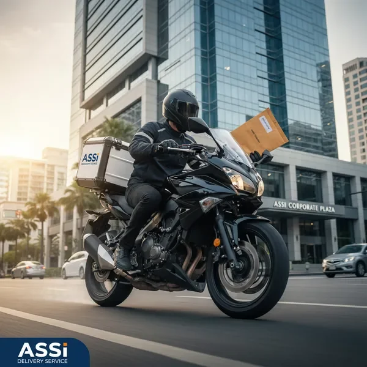
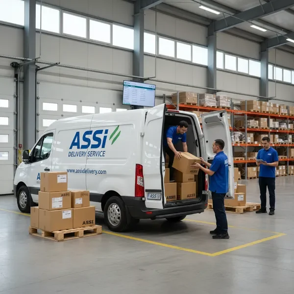
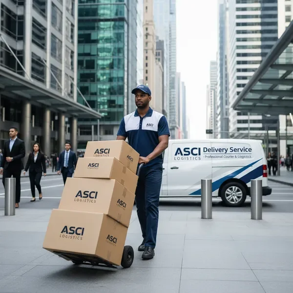
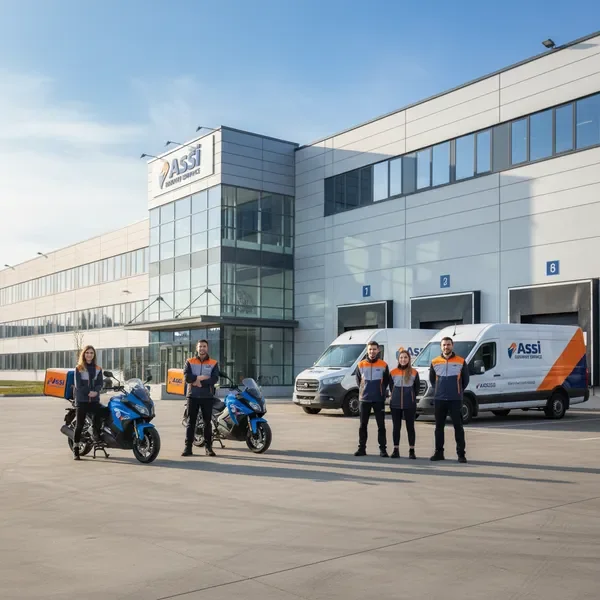

שירותי שליחויות ולוגיסטיקה מקצועיים לחברות גדולות - מהירות, דיוק ושירות ללא פשרות
זמני אספקה מובטחים תוך שעות ספורות
מעקב בזמן אמת ואחריות מלאה על כל משלוח
שירות סביב השעון לכל צרכי העסק שלך
שליחים מיומנים ומנוסים עם שירות אישי
מצא תשובות לשאלות הנפוצות ביותר
אנו מציעים מגוון רחב של שירותי שליחויות ולוגיסטיקה לחברות גדולות, כולל משלוחים מהירים בתוך העיר, משלוחים ארציים, שירותי קוריר אקספרס, וניהול לוגיסטי מקיף. כל שירות מותאם לצרכים הספציפיים של העסק שלך.
זמני המשלוח משתנים בהתאם לסוג השירות ולמרחק. משלוחים אקספרס בתוך העיר יכולים להתבצע תוך שעה-שעתיים, בעוד משלוחים ארציים מתבצעים בדרך כלל תוך 24-48 שעות. אנו מתחייבים למהירות ודיוק בכל משלוח.
התעריפים מחושבים על פי מספר פרמטרים: מרחק המשלוח, משקל וגודל החבילה, דחיפות המשלוח, ותדירות השימוש בשירות. אנו מציעים מחירים תחרותיים במיוחד ללקוחות עסקיים עם נפח משלוחים גבוה. צור קשר לקבלת הצעת מחיר מותאמת אישית.
כן! אנו מספקים מערכת מעקב מתקדמת המאפשרת לך לעקוב אחר המשלוח שלך בזמן אמת. תקבל עדכונים באמצעות SMS או אימייל בכל שלב של תהליך המשלוח, מרגע האיסוף ועד למסירה הסופית.
אנו מתחייבים לאחריות מלאה על כל משלוח. במקרה הנדיר של נזק או אובדן, יש לנו ביטוח מקיף המכסה את כל החבילות. צור איתנו קשר מיד ונטפל בבעיה בצורה מהירה ומקצועית, כולל פיצוי מלא במידת הצורך.
אנו מציעים שירות גמיש המותאם לצרכי הלקוח. בעוד ששעות הפעילות הרגילות שלנו הן בימי חול, אנו יכולים לארגן משלוחים מיוחדים גם בסופי שבוע וחגים בתיאום מראש. צור קשר לפרטים נוספים על זמינות בימים מיוחדים.
פתרונות לוגיסטיים מותאמים אישית לכל סוג עסק

שירות משלוחים מהיר במיוחד למסמכים וחבילות קטנות. אספקה תוך שעתיים בתוך העיר ותוך 4 שעות בין ערים.

פתרונות לוגיסטיים מקיפים לחברות גדולות. ניהול מלאי, אחסון והפצה במערך אחד מתואם.

שירות משלוחים קבוע לעסקים עם מסלולים מותאמים אישית. חיסכון בעלויות ושירות יציב.
עשרות שנות ניסיון בשירותי שליחויות ולוגיסטיקה לחברות מובילות בישראל
צי רכבים חדיש ומאובזר במערכות מעקב GPS לשירות מהיר ומדויק
צוות שירות לקוחות זמין 24/7 לכל שאלה או בעיה שתתעורר
מחירים הוגנים ושקופים עם הנחות לעסקים קבועים

צור איתנו קשר עכשיו וקבל הצעת מחיר מותאמת אישית לצרכי העסק שלך